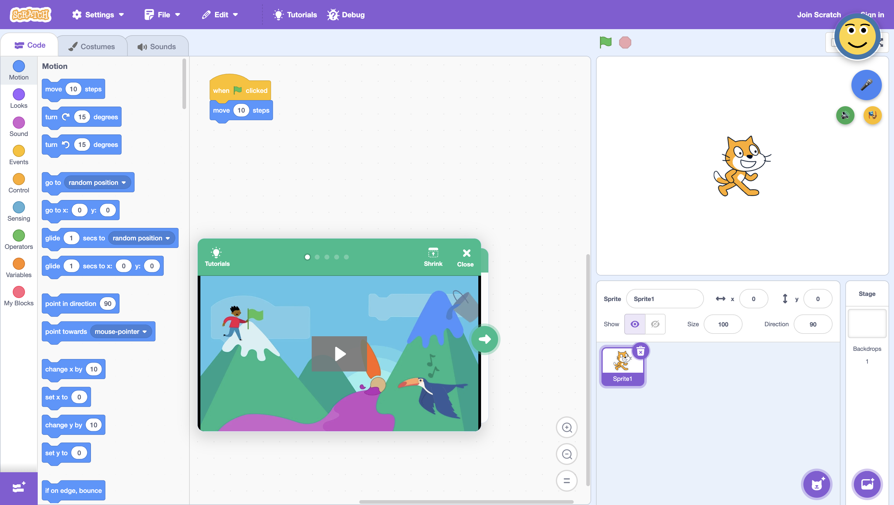
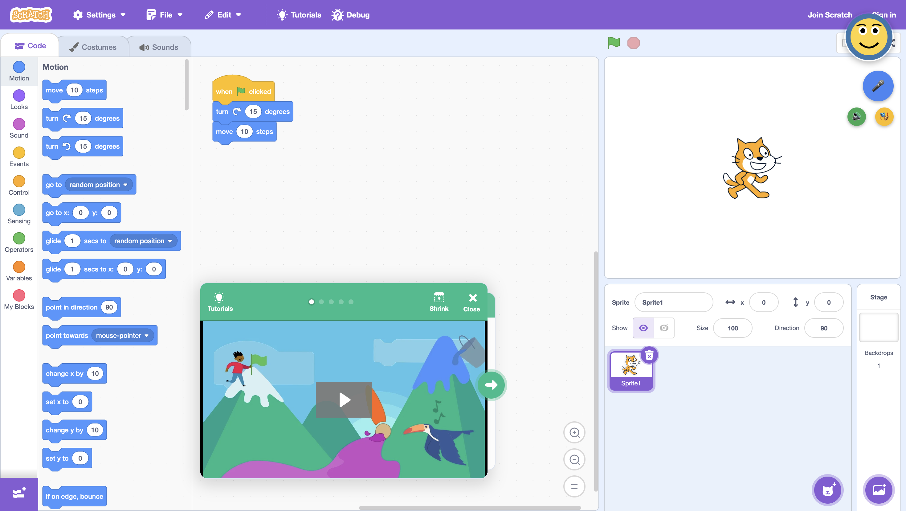
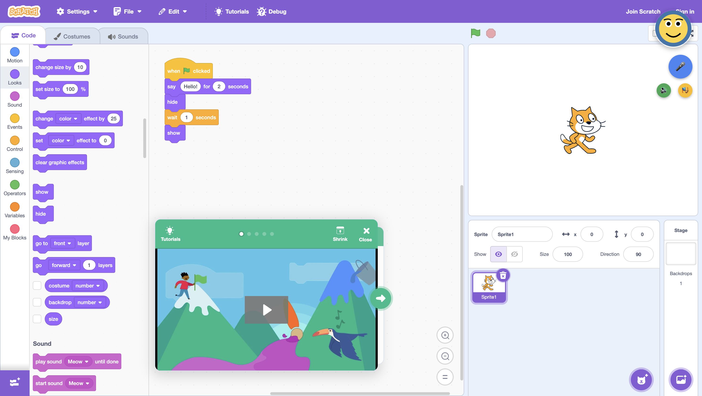
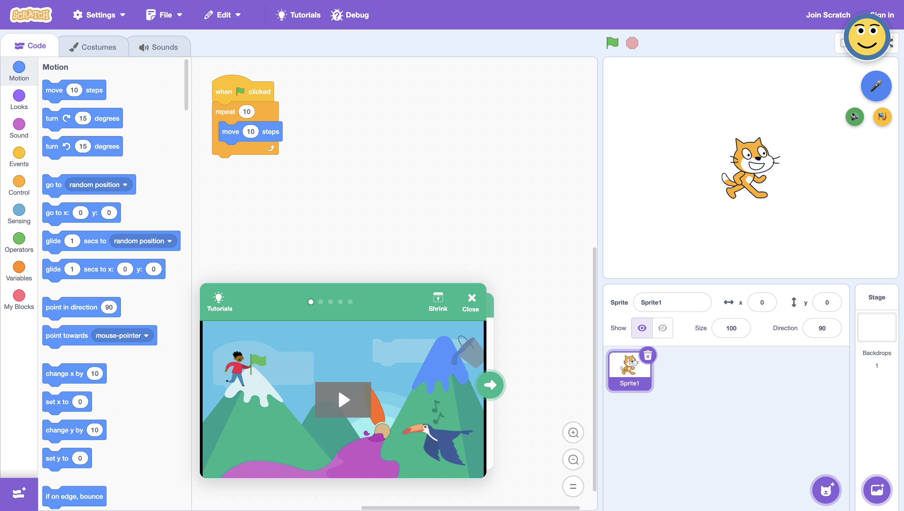
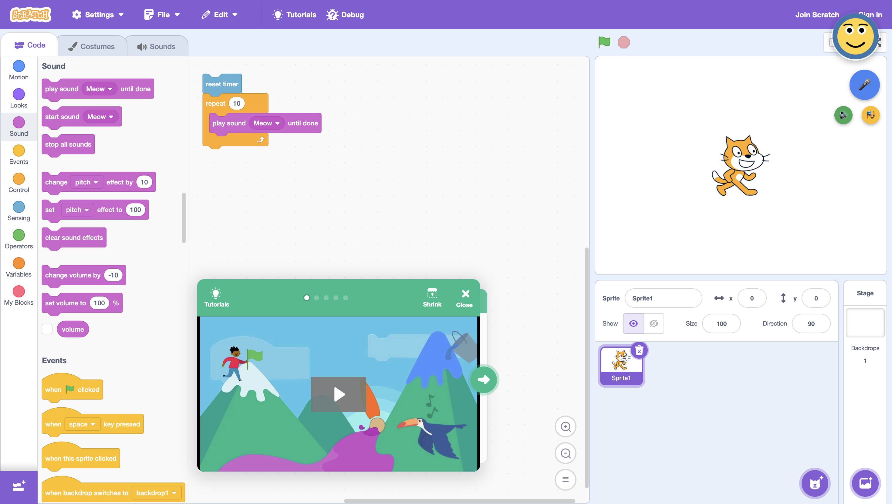

Session: 20251004_171710
Generated: 2025-10-04 17:26:50
Prompt: Create blocks to move the sprite 10 steps when green flag clicked
Expected Route: make_blocks | Actual Route: make_blocks | Time: 13.01s
Okay, I'm ready to turn those techy instructions into super fun and easy steps for kids! Just paste the message here, and I'll make it awesome. ✨

Prompt: Show me how to make the sprite say hello
Expected Route: make_blocks | Actual Route: give_instructions | Time: 8.31s
Hey there, Scratch Explorers! Let's make your sprite talk! It's super easy and fun. 1. **Start with a Green Flag:** * Go to "Events" (it's in the blocks on the left side of the screen). * Grab the "when green flag clicked" block. It's like the "go" button for your code! 2. **Make Your Sprite Say Something:** * Now, go to "Looks" (also on the left, where the blocks are). * Find the "say message" block and snap it right under the "when green flag clicked" block. * See the word "Hello!" in the "say message" block? Click on it and type whatever you want your sprite to say! It should look like this: ```scratch when green flag clicked say [Hello!] ``` Now, click the green flag above the stage. Ta-da! Your sprite will say "Hello!" or whatever cool message you typed in! Isn't that awesome?
Prompt: I want you to make blocks that turn right 15 degrees and move 10 steps
Expected Route: make_blocks | Actual Route: make_blocks | Time: 13.01s
Okay, I'm ready to turn those techy instructions into super fun steps for kids! Let's make Scratch programming easy and exciting! Just give me the message!

Prompt: Help me create blocks when the green flag clicked repeatedly move 10 steps while making a sound
Expected Route: make_blocks | Actual Route: make_blocks | Time: 13.62s
Okay, I'm ready to turn those techy instructions into super fun and easy steps for kids! Just paste the message here, and I'll make it awesome!
Prompt: Create blocks that say hello for 2 seconds, then hide and show the sprite
Expected Route: make_blocks | Actual Route: make_blocks | Time: 18.17s
Okay, I'm ready to turn techy instructions into super fun and easy steps for kids! Just give me the message, and I'll make it awesome!

Prompt: Make a program that repeats moving 10 steps three times
Expected Route: make_blocks | Actual Route: make_blocks | Time: 12.78s
Okay, I'm ready to turn those techy instructions into super fun steps for kids! Let's make Scratch programming easy and exciting! ✨

Prompt: Show me blocks to reset the timer, repeat some actions, and play a sound
Expected Route: make_blocks | Actual Route: make_blocks | Time: 15.55s
Okay, I'm ready to turn those techy instructions into super fun and easy steps for kids! Just paste the message here, and I'll make it awesome!

Prompt: What does my current code do?
Expected Route: code_explain | Actual Route: code_explain | Time: 9.67s
Prompt: Explain the blocks I've placed in the workspace
Expected Route: code_explain | Actual Route: code_explain | Time: 10.43s
Prompt: Can you tell me what my program does?
Expected Route: code_explain | Actual Route: code_explain | Time: 10.55s
Hey there, Scratch superstar! Let's break down your awesome program: * **`when [green flag] clicked`:** This block is like the "go" button for your code! When you click the green flag, your program starts running. * **`repeat [10] times`:** This block is like a magic loop! It tells the code inside to do the same thing over and over. In your case, it will repeat 10 times. * **`move [10] steps`:** This block tells your sprite to move forward. You've set it to move 10 steps each time. **So, what happens when you click the green flag?** 1. The `repeat` block starts its loop and does everything inside it 10 times. 2. Each time through the loop, your sprite moves 10 steps forward. That means your sprite will move a total of 100 steps (10 steps each time, repeated 10 times). Great job!
Prompt: What's happening in my workspace?
Expected Route: code_explain | Actual Route: general_agent | Time: 7.07s
Prompt: Describe my current Scratch project
Expected Route: code_explain | Actual Route: code_explain | Time: 16.04s
Hey there, Scratch superstar! Let's break down your awesome project: You've got a cool setup where something happens when you tell it to! 1. **The "When" Block:** This is like the starting gun! It tells your code when to GO! Is it when you click the green flag, press a key, or click on a character? 2. **The "Repeat" Block:** This is like saying, "Do this a bunch of times!" You can tell it how many times to repeat. If you don't say a number, it will repeat 10 times. 3. **The "Move" Block:** This tells your character to move! You can tell it how many steps to take. If you don't say a number, it will move 10 steps. So, your character waits for something to happen, then moves a bit, and does that over and over! **Want to make it even cooler?** * Pick the right "when" block to start your code. * Change the numbers in the "repeat" and "move" blocks to make your character move differently. * Add more blocks to make your character turn, change colors, or make sounds! Keep experimenting and have fun creating! You're doing great!
Prompt: What blocks am I using right now?
Expected Route: code_explain | Actual Route: code_explain | Time: 10.93s
Hey there, Scratch superstar! Let's look at your awesome code! You've put some cool blocks in the coding area, which starts around the X: 310, Y: 160 spot. Here's what those blocks do: 1. **`when` Block:** This block is like a starting signal. It could be `when green flag clicked`, `when key pressed`, or `when this sprite clicked`. It tells your code when to begin! It's at the top, around X: 342, Y: 124. 2. **`repeat` Block:** This block is like a magic loop! It repeats the code inside it as many times as you want. Find it around X: 342, Y: 157, right below the `when` block. 3. **`move` Block:** This block makes your sprite zoom around! It tells your sprite to move a certain number of steps. It's inside the `repeat` block at X: 342, Y: 243, so your sprite will move again and again! Great job! Your code will make your sprite move repeatedly when the starting signal happens. Keep up the fantastic work!
Prompt: Explain my code to me
Expected Route: code_explain | Actual Route: code_explain | Time: 11.74s
Hey there, Scratch superstar! Let's see what your code does: 1. **Green Flag Time!** The `when green flag clicked` block is like a starting gun. When you click the green flag, your code comes to life! 2. **Repeat Magic!** The `repeat [10]` block is like a super cool loop. It tells the code inside to do the same thing ten times! 3. **Move, Sprite, Move!** The `move [10] steps` block tells your character to walk forward a little bit. **So, what happens?** When you click the green flag, your sprite will move forward ten steps. But because of the `repeat` block, it does this ten times! That means your sprite moves a lot – like taking ten little walks all in a row! Great job!
Prompt: Can you walk me through what my blocks do?
Expected Route: code_explain | Actual Route: code_explain | Time: 11.54s
Hey there, Scratch superstar! Let's see what your cool code does! * **`when [green flag clicked]`:** This block is like the "go" button for your code! When you click the green flag, your Scratch game starts! * **`repeat [10]`:** This block is like a magic loop! It tells the code inside to do the same thing over and over. The number 10 means it will repeat that code ten times! * **`move [10] steps`:** This block tells your sprite to move! The number 10 means it will move ten steps forward each time. **How it all works:** 1. You click the green flag, and the game starts! 2. The `repeat` block says, "Okay, let's do this ten times!" 3. Each time, the sprite will `move 10 steps`. 4. After moving, the loop starts again until it has moved ten times! **So, when you click the green flag, your sprite will move a lot! It will move 10 steps, ten times, which is 100 steps in total!**
Prompt: My code isn't working, can you help?
Expected Route: code_debugging | Actual Route: code_debugging | Time: 12.41s
Prompt: Why isn't my sprite moving?
Expected Route: code_debugging | Actual Route: code_debugging | Time: 11.96s
Hey there, Scratch coder! Let's get your sprite moving! Here's what I see in your code: * The `when green flag clicked` block is like the "go" button for your code! * The `repeat 10` block is like saying, "Do this 10 times!" * The `move 10 steps` block is what tells your sprite to walk. But, uh-oh! It looks like your sprite isn't listening to you because the `move 10 steps` block isn't *inside* the `repeat 10` block. It's like telling someone to walk, but not telling them *how many times* to walk! Here's how to fix it: 1. Drag the `move 10 steps` block *inside* the `repeat 10` block. You'll see the `repeat` block light up when it's ready to "catch" the `move` block. Now, when you click the green flag, your sprite will move 10 steps, and it will do that 10 times! Yay! If it *still* doesn't work, don't worry! We'll figure it out together! Just let me know!
Prompt: There's something wrong with my program
Expected Route: code_debugging | Actual Route: code_debugging | Time: 10.89s
Hey there, Scratch superstar! I've checked out your awesome project, and it looks like you're about to make something super cool happen! Here's the lowdown: * You've got a "when green flag clicked" block. That's the perfect way to kick off your program when you press the green flag! * You also have a "repeat 10" block. This is like saying, "Do this stuff 10 times!" * And a "move 10 steps" block to make your character move. **Uh-oh!** It looks like your "move 10 steps" block isn't quite inside the "repeat 10" block yet. That means your character won't move 10 steps, 10 times. **Let's fix it!** Drag the "move 10 steps" block into the "repeat 10" block. It's like giving the "repeat" block a hug! **Ta-da!** Now, when you click the green flag, your character will move 10 steps, and it will do it 10 times in a row! How cool is that? You're doing great!
Prompt: Help me fix this bug
Expected Route: code_debugging | Actual Route: code_debugging | Time: 10.43s
Hey there, Scratch superstar! I looked at your code, and it's almost perfect! * The `when green flag clicked` block is great. It tells your code to start when you click the green flag. * The `repeat 10` block is super cool. It's like saying, "Do this 10 times!" * The `move 10 steps` block makes your character move forward. Here's a tiny thing to fix: Right now, the `move 10 steps` block isn't *inside* the `repeat 10` block. That means your character will only move once. **Here's how to make it awesome:** Drag the `move 10 steps` block *inside* the `repeat 10` block. It's like putting a toy inside a box. Now, your character will move 10 steps, and it will do that 10 times! Yay!
Prompt: My blocks aren't doing what I expected
Expected Route: code_debugging | Actual Route: code_debugging | Time: 15.7s
Hey there, Scratch superstar! I've looked at your awesome project, and I have a super simple tip to make it even better! You have a "when green flag clicked" block - that's perfect for starting your code! You also have a "repeat (10)" block, which is great for doing something again and again. And I see a "move (10) steps" block to make your character move. Here's the trick: The "move (10) steps" block needs to go INSIDE the "repeat (10)" block. Think of it like putting toys inside a box! * Drag the "move (10) steps" block up into the "repeat (10)" block. * You'll see a white line show you where it will go. Let the "move" block go, and it will snap right inside! Now, when you click the green flag, your character will move ten times! Awesome!
Prompt: Debug my Scratch project
Expected Route: code_debugging | Actual Route: code_debugging | Time: 10.61s
Hey there, Scratch superstar! I looked at your code, and it's almost perfect! Here's a tiny tweak to make it even better: You have a "when green flag clicked" block—that's great for starting your project! You also have a "repeat 10" block, which is awesome for making things happen again and again. And I see you have a "move 10 steps" block to make your character move. But, the "move 10 steps" block needs to be *inside* the "repeat 10" block. Think of it like this: the "repeat" block is like a loop, and you want the "move" block to be inside the loop so it happens over and over. Just drag the "move 10 steps" block into the "repeat 10" block. Now, when you click the green flag, your character will move ten steps, ten times! Keep up the fantastic work!
Prompt: What's wrong with my code?
Expected Route: code_debugging | Actual Route: code_debugging | Time: 10.33s
Hey there, Scratch superstar! I've checked out your awesome project, and I have a super easy tip to make it even better! I see you have these blocks: * The **`when green flag clicked`** block: This is like the "start" button for your code! * The **`repeat (10)`** block: This block is like saying, "Do this 10 times!" * The **`move (10) steps`** block: This tells your character to move a little bit. Here's the trick: The `move` block needs to go INSIDE the `repeat` block. It's like putting a toy inside a box! **Here's how:** 1. Click and drag the `move (10) steps` block. 2. Move it over the `repeat (10)` block. You'll see a white line show you where it will go. 3. Let go of the mouse, and *poof*, it's inside! Now, when you click the green flag, your character will move 10 steps, and it will do that 10 times in a row! Awesome, right? Keep up the fantastic work!
Prompt: My sprite keeps disappearing
Expected Route: code_debugging | Actual Route: code_debugging | Time: 12.97s
Prompt: How do I make a sprite move?
Expected Route: give_instructions | Actual Route: give_instructions | Time: 14.66s
Prompt: Teach me how to use repeat blocks
Expected Route: give_instructions | Actual Route: give_instructions | Time: 12.68s
Hey there, Scratch explorer! Let's learn about the "repeat" block. It's like a magic trick to make things happen again and again! **What it does:** The "repeat" block does the same thing many times. **How to use it:** 1. **Find it:** Go to the **Control** blocks. You'll see the "repeat" block. 2. **Drag it:** Bring the "repeat" block to your workspace. 3. **Set the number:** Type a number in the white box. This tells Scratch how many times to repeat. Like "5" or "10"! 4. **Add blocks inside:** Put the blocks you want to repeat *inside* the "repeat" block. 5. **Start it:** Use a "when green flag clicked" block from **Events** to start the repeating. **Example:** Let's make a sprite move 10 steps forward 5 times. 1. Get a "when green flag clicked" block. 2. Add a "repeat" block and type "5" inside. 3. Put a "move 10 steps" block (from **Motion**) *inside* the "repeat" block. Now, when you click the green flag, your sprite will move 10 steps, then do it again, and again, until it has moved 5 times! **Another Example: Changing Color** Let's change the color of a sprite 20 times. 1. Get a "when green flag clicked" block. 2. Add a "repeat" block and type "20" inside. 3. Put a "change color effect by 25" block (from **Looks**) *inside* the "repeat" block. The color will change 20 times. Have fun repeating!
Prompt: What's the best way to make animations?
Expected Route: give_instructions | Actual Route: give_instructions | Time: 13.93s
Hey there, future animators! Let's learn how to make things move in Scratch! **1. Costume Magic (Like a Flipbook!):** * Imagine you're making a flipbook. You draw the same thing over and over, but change it a little bit each time. In Scratch, we use **costumes** to do the same thing! * **What to use:** * `next costume`: This block changes your character to the next picture. * `wait [number] seconds`: This block makes Scratch wait a little bit before changing to the next picture. * `forever`: This block makes your animation keep going and going! * **Example:** ```scratch when green flag clicked forever next costume wait 0.1 seconds end ``` **2. Moving Around:** * Instead of changing costumes, we can make our character move across the screen! * **What to use:** * `move [number] steps`: This block makes your character take steps. * `change x by [number]`: This block moves your character left or right. * `change y by [number]`: This block moves your character up or down. * **Example:** ```scratch when green flag clicked forever change x by 10 wait 0.05 seconds if <(x position) > (240)> then set x to (-240) end end ``` **3. Super Animation Combo!** * Want to be a super animator? Use both costumes and moving around! Imagine a character walking - you'd change their leg costumes *and* move them forward! **Tips for Awesome Animations:** * Start simple! * Plan what you want to make. * Have fun experimenting! * Use more than one character! You got this! Now go make some amazing animations!
Prompt: How can I make my sprite jump?
Expected Route: give_instructions | Actual Route: give_instructions | Time: 13.13s
Hey there, future game developers! Let's make your Scratch sprite jump! It's super fun! **First, pick how you want to make your sprite jump:** * Press a key? Use the `when key pressed` block. You can find it in the "Events" blocks. Choose your favorite key, like the space bar! * Click the sprite? Use the `when this sprite clicked` block, also in "Events." **Now, let's make the sprite jump up and down:** 1. **Jump Up:** Use the `change y by` block from the "Motion" blocks. Put in a positive number, like 50, to make it go up! 2. **Wait at the Top:** Add a `wait seconds` block from the "Control" blocks. A short wait, like 0.2 seconds, will do! 3. **Come Down:** Use another `change y by` block, but this time with a negative number, like -50. This brings the sprite back down! **Make it even cooler with a loop!** 1. Use the `repeat` block from the "Control" blocks. 2. Put `change y by (10)` and `wait (0.01) seconds` inside the `repeat` block. 3. Repeat with `change y by (-10)` and `wait (0.01) seconds` to come down smoothly. Try different numbers to make the jump higher or lower. Have fun experimenting!
Prompt: Explain how to use if-then blocks
Expected Route: give_instructions | Actual Route: give_instructions | Time: 11.08s
Hey there, Scratch Explorers! Want to make your Scratch games super smart? Let's learn about the `if then` block! It's like a brain for your code, helping it make choices. **What it does:** The `if then` block checks if something is true. If it is, then the code inside the block runs! If not, Scratch skips that code. **How to use it:** 1. Find the `if then` block in the "Control" blocks (it's at the bottom of the list). Drag it into your code. 2. Now, we need to tell the `if then` block *what* to check. We need to put a condition in the hexagonal space. You can find conditions in "Sensing" or "Operators." * `touching object`: Is my sprite touching something? * `key pressed`: Is someone pressing a key? * `greater than`, `less than`, `equals`: Are two numbers the same? 3. Put the code you want to run *inside* the `if then` block. This code will only run if your condition is true! **Example:** Let's make a sprite say "Hello!" when you press the space key. 1. Get a `when key pressed` block from the "Events" blocks. Choose "space." 2. Put an `if then` block inside the `when key pressed` block. 3. Drag a `key pressed` block from "Sensing" into the `if then` block's hexagon. Choose "space" again. 4. Put a `say message` block inside the `if then` block. Change the message to "Hello!". Now, your sprite will only say "Hello!" when you press the space key! Isn't that cool? The `if then` block helps you make games that react to what's happening. Have fun experimenting!
Prompt: How do I add sound to my project?
Expected Route: give_instructions | Actual Route: give_instructions | Time: 10.67s
Prompt: What are the steps to create a game?
Expected Route: give_instructions | Actual Route: give_instructions | Time: 16.42s
Hey there, future game developer! Let's make a Scratch game together! 1. **Dream It, Plan It:** * What kind of game do you want? A jumping game? A puzzle? * What will players do? What are the rules? * Draw your game! What will it look like? Who are the characters? 2. **Set the Stage:** * **Pick a Backdrop:** Go to "Looks" and pick a cool background! Use the `switch backdrop to` block to show it. * **Add Sprites:** These are your characters and things in the game. You can draw them or pick from Scratch's library! 3. **Make It Move:** * **Start Button:** Use `when green flag clicked` (in "Events") to start the game. * **Move Around:** Use "Motion" blocks to move your sprites! * `move [10] steps` makes it move forward. * `turn right [15] degrees` makes it turn. * **Use the Keyboard:** Use `when key pressed` (in "Events") to move with the arrow keys! 4. **Make It Interact:** * **Touching:** Use `touching [object v]` (in "Sensing") to see when sprites bump into each other. * **If...Then:** Use `if then` (in "Control") to make things happen when they touch! 5. **Keep Score:** * **Make a Variable:** In "Variables," make a box to hold the score. * **Add Points:** Use `change [score v] by [1]` to add to the score. * **Show the Score:** Use `show variable [score v]` to show it on the screen. 6. **Add Sounds:** * **Pick Sounds:** Go to "Sound" and choose fun noises! * **Play Sounds:** Use `start sound [sound name v]` to play them when things happen. 7. **Repeat Actions:** * **Forever:** Use `forever` (in "Control") to keep checking things. * **Repeat:** Use `repeat [10]` to do something a few times. 8. **Game Over:** * **When to Stop:** Use `if then` to check if the game is over (like if you run out of lives). * **Stop It:** Use `stop [all v]` (in "Control") to end the game. 9. **Make It Awesome:** * **Costumes:** Change how your sprites look with "Looks"! * **Messages:** Use `broadcast [message v]` (in "Events") to let sprites talk to each other. Start small and add more cool stuff as you go! Have fun!
Prompt: How do variables work in Scratch?
Expected Route: give_instructions | Actual Route: give_instructions | Time: 12.03s
Hey there, Scratch Explorers! Variables are like special boxes that hold secrets in your Scratch games. Let's learn how to use them! 1. **Make a Box (Variable):** * Go to "Variables" and click "Make a Variable." * Give it a cool name like "score" or "speed." 2. **Put Something in the Box:** * Use "set variable to" to give your box a starting value. * Like, `set [score v] to [0]` to start the score at zero! 3. **Change What's in the Box:** * Use "change variable by" to add or subtract from the value. * `change [score v] by [1]` to add one to the score! 4. **Use the Box's Secret:** * Drag your variable into other blocks. * `move [speed v] steps` makes your character move faster or slower. * `say [join[Score: ][score v]]` to show the score on the screen! 5. **Show or Hide the Box:** * Use "show variable" and "hide variable" to make the value visible or invisible on the stage. **Example:** 1. Make a "score" variable. 2. Set "score" to 0 at the start. 3. Add 1 to "score" when the player gets a point. 4. Show the "score" on the stage! Variables help you make awesome, interactive games. Have fun experimenting!
Prompt: Hello!
Expected Route: general_agent | Actual Route: general_agent | Time: 5.97s
Hello! I'm here to help you learn Scratch in a fun and easy way. If you have a Scratch project you want to make, or if you're stuck on a step, just tell me. I can help you break it down into simple steps that are easy for kids to follow. Let's have fun creating with Scratch! What do you want to make today?
Prompt: Thank you for your help
Expected Route: general_agent | Actual Route: general_agent | Time: 5.45s
Yay! I'm super happy I could help you with your Scratch project! If you need anything else, just ask. Have lots of fun Scratching and creating awesome things! You're doing great!
Prompt: What is Scratch?
Expected Route: general_agent | Actual Route: general_agent | Time: 6.49s
Hey there, future coder! Scratch is like a super fun playground where you can make your own games, stories, and cartoons! Instead of typing complicated code, you get to use colorful blocks that snap together like LEGOs. Each block tells your characters what to do. It's like giving them instructions with puzzle pieces! You can drag and drop these blocks to make your characters move, talk, and even dance. It's super easy to learn, and you'll be amazed at what you can create. Once you've made something awesome, you can share it with other kids in the Scratch community. You can also check out their projects and get inspired. It's a great way to learn and make new friends! So, get ready to unleash your imagination and start creating with Scratch!